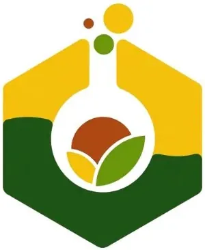

Food Research & Development Center — Central Mindanao University
Central Mindanao University (CMU) · Region X
The Food Research & Development Center (FRDC) at Central Mindanao University is a DOST-10 partnered food innovation facility located in Maramag, Bukidnon. Established in 2016, the FRDC provides food entrepreneurs and MSMEs in Central Mindanao with technical assistance, food processing equipment, and product development services, functioning as a regional food innovation hub for Bukidnon and surrounding areas.
- Category
- Food Innovation Center
- Host institution
- Central Mindanao University (CMU)
- City
- Maramag, Bukidnon
- Region
- Region X
- Operating status
- Operating
About the Center
The FRDC supports agri-based enterprises by helping them develop, test, and commercialize value-added food products from local agricultural commodities such as corn, coffee, and other highland crops indigenous to Central Mindanao.
Programs & Services
- Product Development — R&D assistance for new food products from concept to prototype
- Food Safety & Regulatory Assistance — Support for FDA registration, HACCP compliance, and food safety certifications
- Packaging & Nutrition Labeling — Label design review, nutritional analysis, and packaging solutions
- Product Costing — Cost analysis and pricing strategy for food entrepreneurs
- Equipment Rental — Access to food processing equipment including spray dryer, freeze dryer, water retort, vacuum fryer, and laboratory tools
- Laboratory Testing — Microbiological, physicochemical, and sensory testing services
- MSME Training — Seminars and workshops on food processing, quality control, and entrepreneurship
- Technology Hub — Incubation-style support for agri-food technology ventures in the Central Mindanao region
Contact
Sources & references
- cmu.edu.ph/food-research-development-center
- region10.dost.gov.ph/337-central-mindanao-university-gets-dost-funding-for-…
- en.wikipedia.org/wiki/Central_Mindanao_University
Details are drawn from public records and the sources above, July 2026.
Startupreneur Innovation Hub · synced from the Notion catalog (July 2026) · status: published.